Version control repositories
Schematic of local and remote version control repositories.
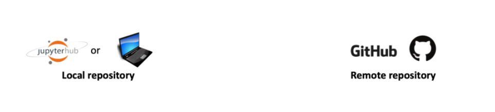
Tracking the repository history using commit messages
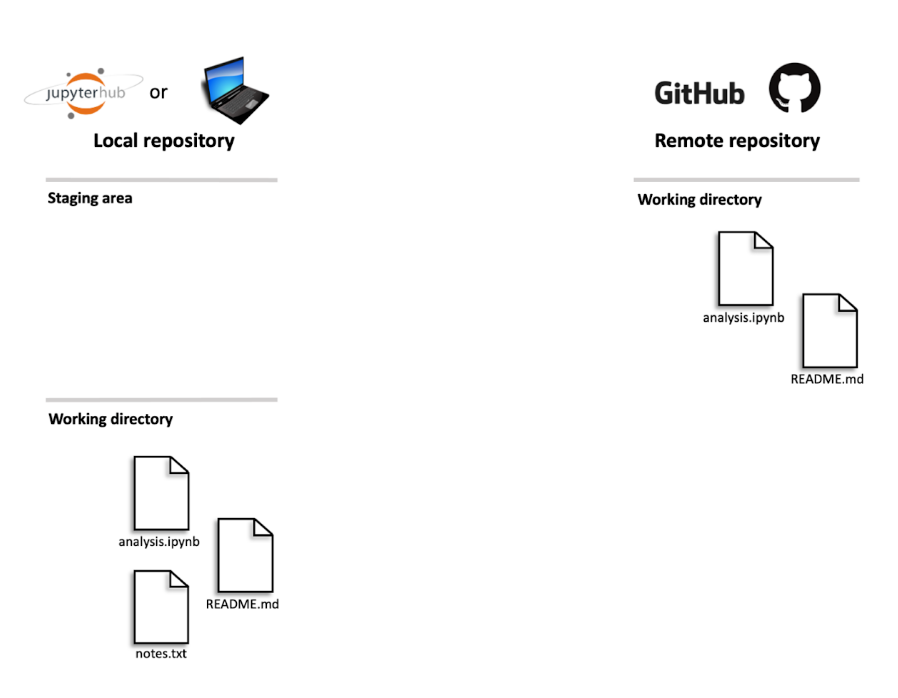
Tracking the repository history using commit messages
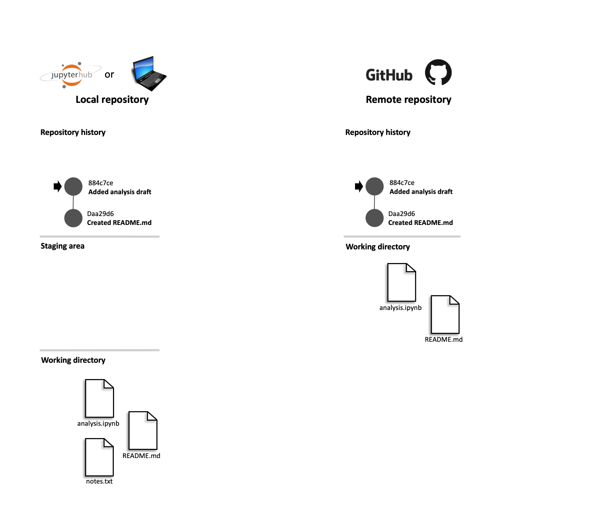
Commit message
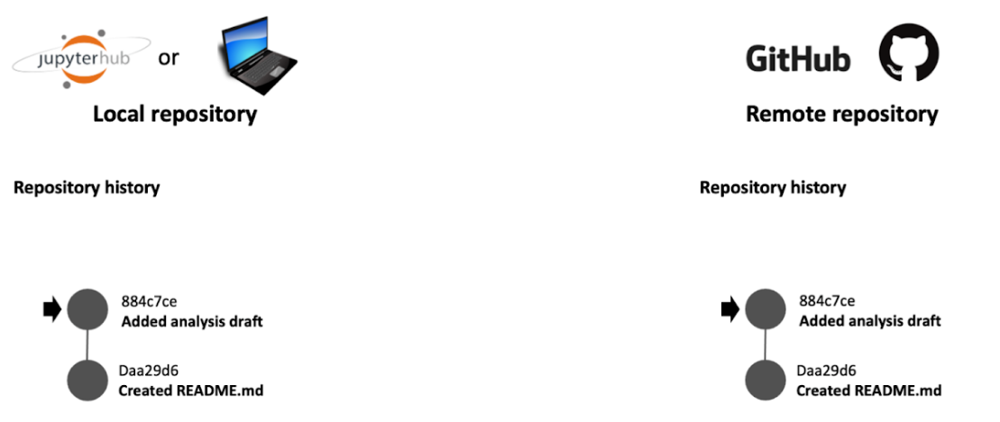
How can you create your repositories?
Create the remote repository in www.github.com (
GitHub
)
Clone the repository to your local computer with the terminal
OR
JupyterLab IDE (
Git
)
How can you create your repositories?
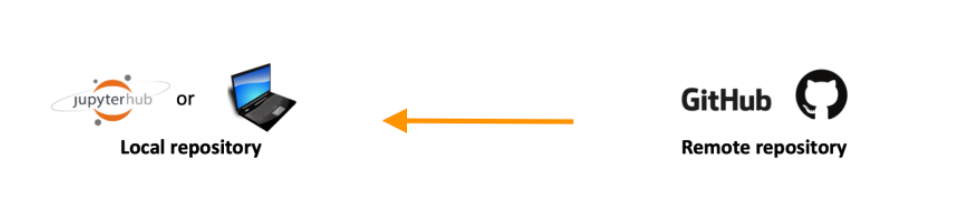
1. Creating a remote repository on GitHub
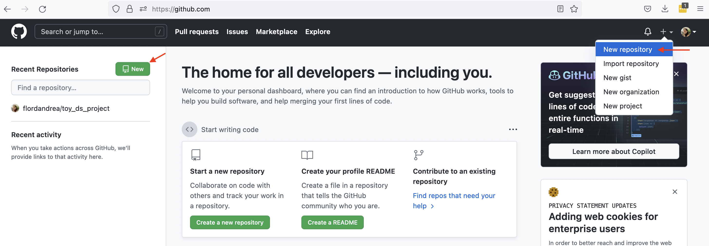
1. Creating a remote repository on GitHub
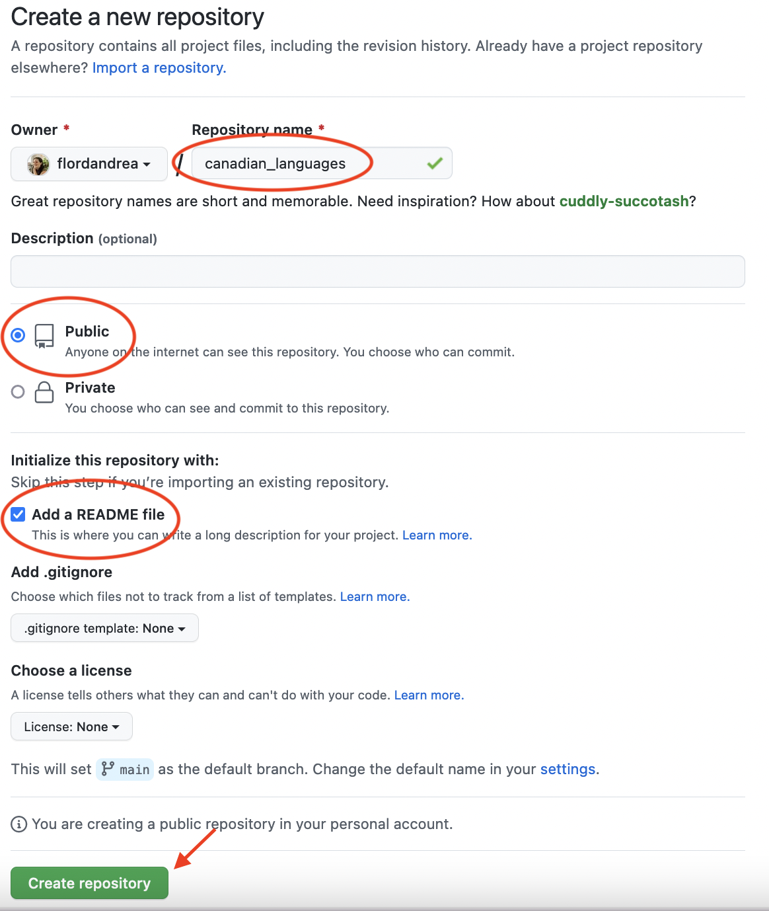
2. Cloning a repository using Jupyter Lab (IDE)
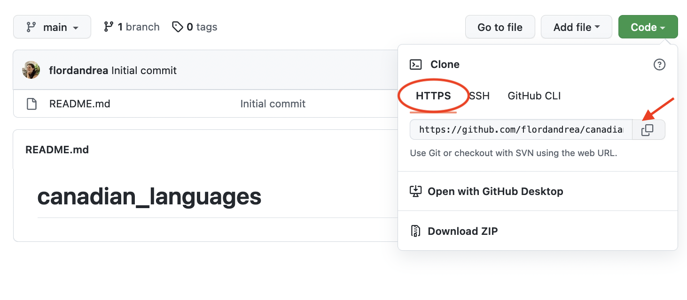
2. Cloning a repository using Jupyter Lab (IDE)
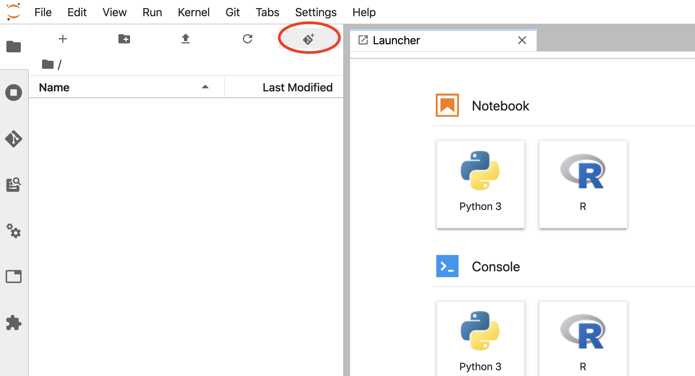
2. Cloning a repository using Jupyter Lab (IDE)
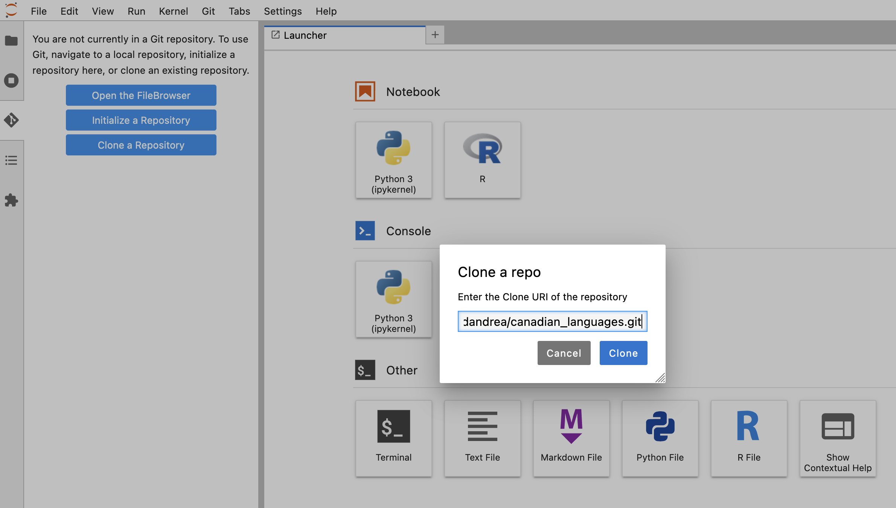
2. Cloning a repository using Jupyter Lab (IDE)
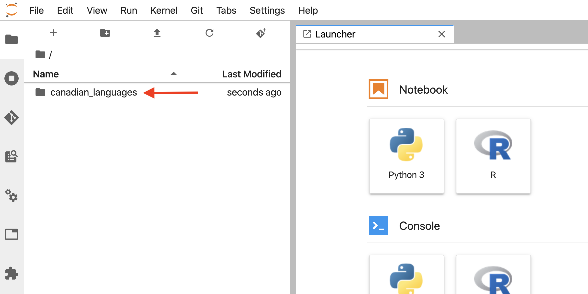
2. Cloning a repository using Jupyter Lab (Terminal)
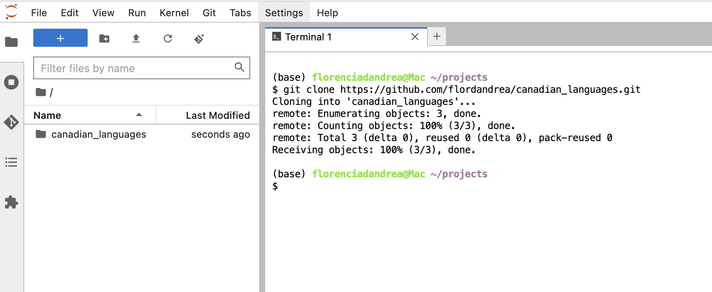
How do you know if you’re working in a Git repository? (Terminal)
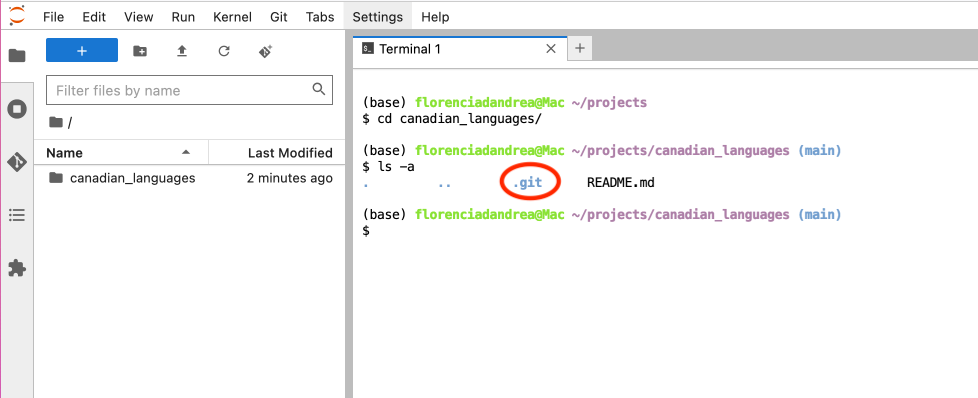
Let’s apply what we learned!